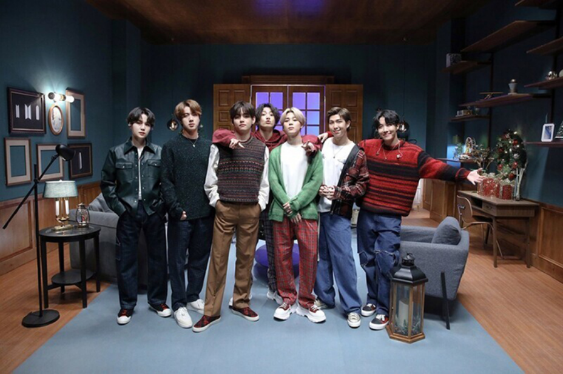

지난 4월의 일입니다. 세월호 참사 6주기를 앞두고 세월호 희생자
유족들을 인터뷰하던 중, 그들의 입에서 뜻밖의 이름이 흘러나왔습니다.
사연은 이러했습니다. 2014년 세월호 참사 뒤 200일가량 지났을 때,
‘젊은 친구들’이 유족들을 찾아왔다고 합니다.
그들은 예의를 갖춰 분향하고, 유족들을 위로하고 돌아갔습니다.
가족협의회 앞으로 1억원을 기부하기도 했답니다.
유족을 찾은 이들은 당시 데뷔 2년차 아이돌 그룹, 방탄소년단(BTS)이었습니다.
소속사 대표인 방시혁 빅히트엔터테인먼트 의장도 당시 함께 자리했다는 게 유족의 설명입니다.
세월호 참사와 관련해 정권 차원의 문화계 블랙리스트가 작성되고,
각종 불이익이 가해졌던 상황에서도 아랑곳하지 않고
소신 있게 행동한 그들이 유족들로선 “참으로 고마웠다”고 합니다.
유족들이 그날 이후로 “그들의 미래를 위해 간절히 기도하고, 응원”한 이유입니다.
비통에 잠긴 자신들을 찾아와 마음을 다해 위로해준 이들이 다른 누구보다 사랑받는
가수가 되길 바란 것은 어쩌면 당연한 일이었을 겁니다.